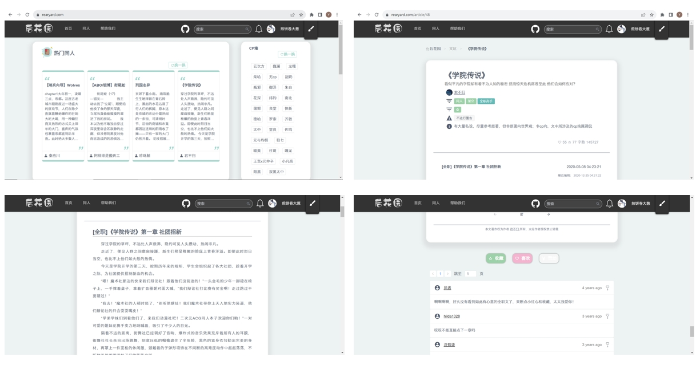
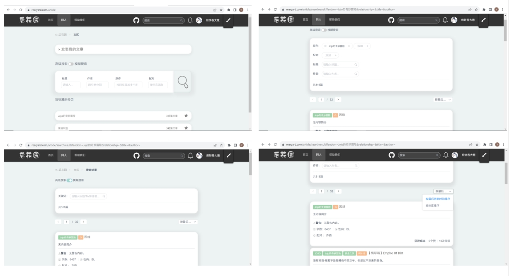
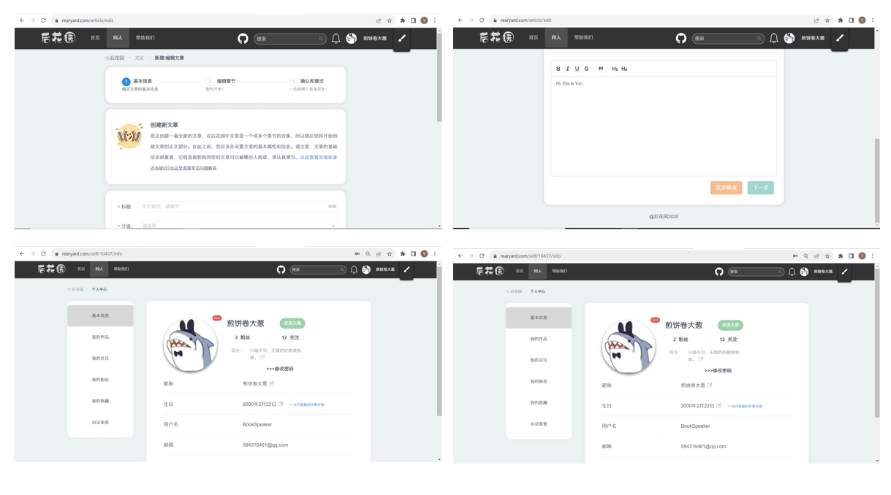
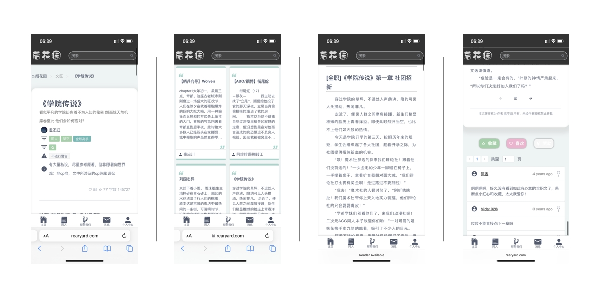
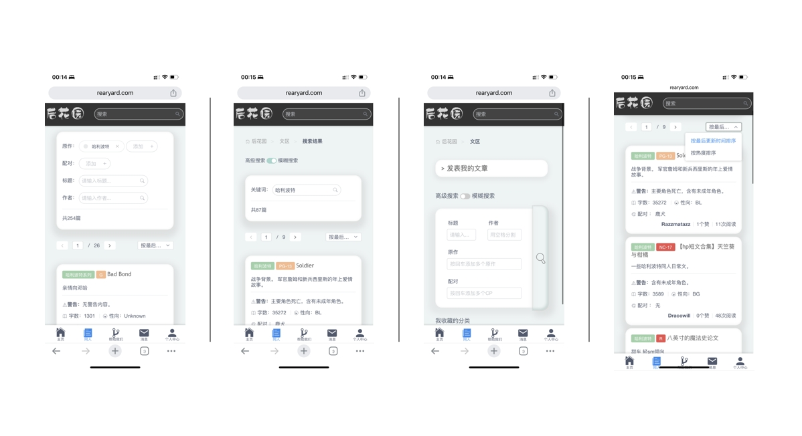
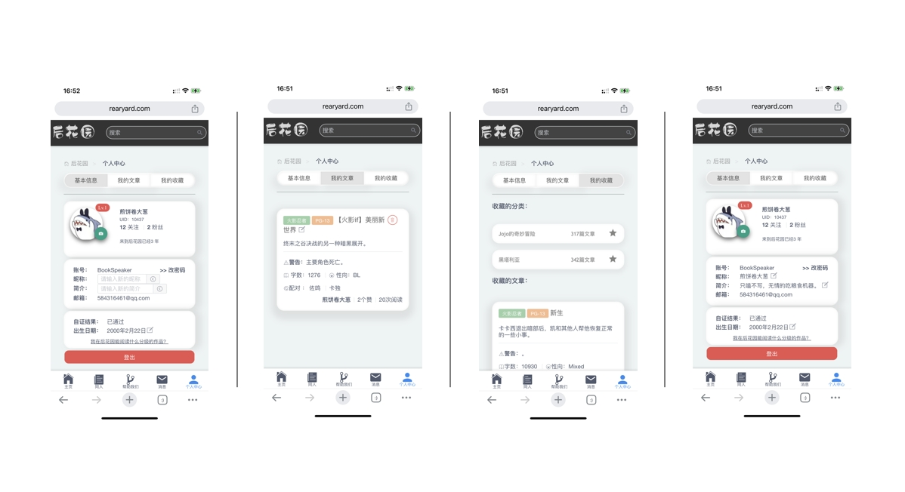
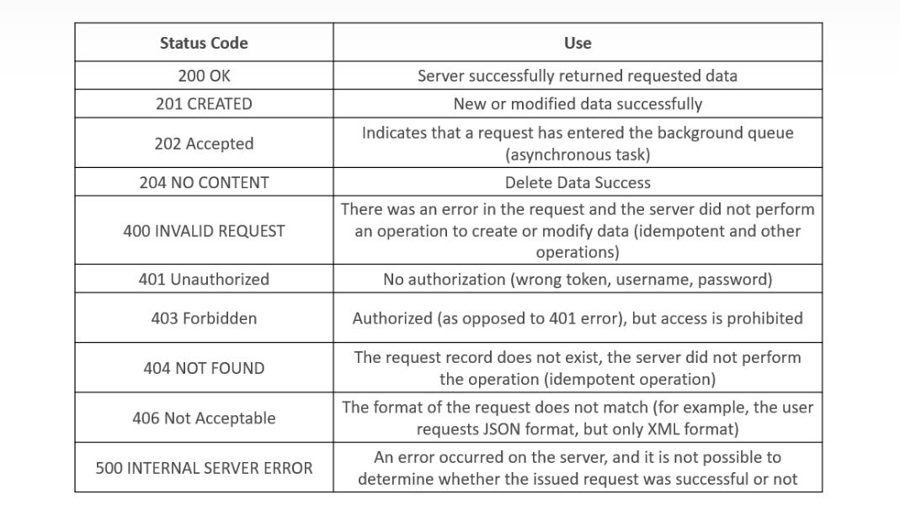

Project Overview
Rearyard is a non-profit platform with more than 40k registered users which allows people to post their novels, search the novels they want and comment to communicate with each other. More than 5k novels are already posted on Rearyard now. The website is maintained by donation from users and the non-profit volunteer team. Mobile application is under development.
Team built
The inception of our volunteer team originated through social media. I posted a call, seeking individuals interested in contributing to this project. After a few days, only one other person and I made the commitment to move forward.
I affectionately refer to this fellow contributor as Chino. You can find his GitHub profile at https://github.com/CafuChino.
During the development of Rearyard, Chino took charge of the majority of architectural tasks, showcasing his expertise in this domain. Meanwhile, my responsibilities encompassed both frontend and backend development, along with overseeing the AWS cloud services and domain management. Together, our collaborative efforts contributed to the comprehensive realization of the project.
UI design
Unfortunately, the original UI design is no longer available. However, I have attached a screenshot of the final project for your reference.
  The UI is responsive, and below is a snapshot of how it appears on a mobile device:
  Frontend Development
The frontend of rearyard is built by Vue.js. You can visit the original code in Github: https://github.com/Rearyard/exile
Each page and its logic is stored in the View folder. The router is managed by vue router (see router folder). The authentication function is packaged with token maintaining (see types/api/auth.ts).
The whole system is based on RESTful style. The following specification was agreed upon when rearyard was developed.
URL:
It must be set like:
https//domain.com/api/{module name}/{? menu name}/{interface name}/:param
1. No uppercase, use a center dash - no underscore _;
2. Use a noun to denote a collection of resources, use the plural form (to ensure consistency across all API URIs), no verbs;
3. Each resource has at least one URI that identifies it, and should also follow a predictable hierarchy to improve understandability and thus usability;
Also, there is no need to add the version number to the URI, it is differentiated by a field in the HTTP request header information (or by including the main version information in the URI and the sub-version information in the request header.
eg:
Accept: vnd.example-com.foo+json; version=1.1
Accept: vnd.example-com.foo+json; version=2.0
Format:
The interaction between frontend and backend fields should all follow lower Camel-Case format.
For example:
Response status
API Design
The API document can be visited at:
click here
The corresponding fields in API document should be the same as those returned
by the backend.
Backend Development
The backend of rearyard is based on Egg.js. It is a framework built by Node.js.
Here are some plug-ins of Egg.js used in this project:
1. egg-mysql
: enable mysql in egg;
2. egg-passport
: authentication management;
3. egg-multipart
: file upload;
4. egg-sequelize
: integrate Sequelize into Egg.js
The backend is divided into controller and service two layers, all interactions with the database are completed in the service, and then packaged by the controller to return the data to the front-end. To avoid CSRF attack, csrftoken is taken out of the cookie when request and is put it HTTP Request head.
For security reasons, the backend source code is not publicly available in the github repository. You can ask me for more details.
Database
Since most of the data, such as articles and users, is relational, rearyard uses mysql to manage most of the data, and the design of the data tables follows the 1NF. In addition, rearyard also has a small amount of non-relational data, such as unread messages of users, which is managed using postgresql, and will be described in the following section. notification center. For detailed fields on mysql tables, visit: https://github.com/Rearyard/rearyard_cgi_model
Notification Center
notification center is a separated backend service dedicated to handling messages received by users such as likes/comments. Since the above messages are more non-relational data, postgresql is used to manage this part of the data.
This notification center is built primarily on RabbitMQ. A producer and a consumer is constructed to deal with notifications. The producer is defined in main backend. Everytime a new comment or like is created, it will send messages to RabbitMQ channel. The consumer is defined in notification center, it will consume unread messages in mq, and write these messages into postgresql database (by JSON format).
For the original code of notification center, please click: https://github.com/Rearyard/rearyard-noticeCenter/tree/develop
Admin center
Due to the needs of this platform, volunteers need to review users, manage and categorize books on a regular basis. Therefore we developed an admin center only for their uses.
The admin center is based on an open-source project D2Admin in github. It is a is a fully open source and free enterprise back-end product front-end integration solution for admin platform.
For viewing the original code, please click here:
Rearyard Admin Frontend
Rearyard Admin Backend
CAPTCHA & Mail service
This project uses Geetest as the solution of CAPTCHA, and uses AliCloud mail service for registration emails.